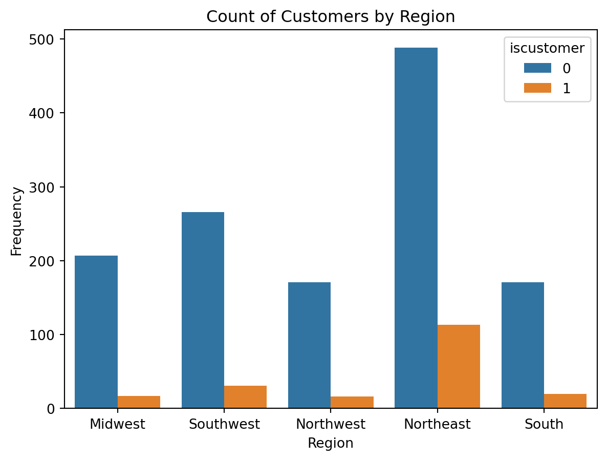
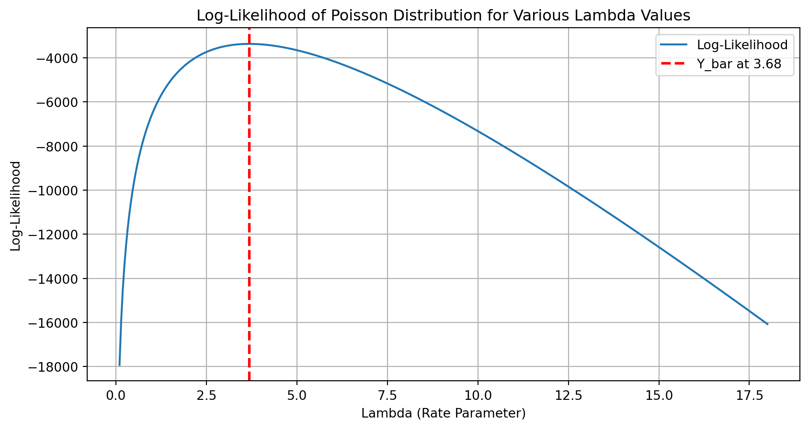
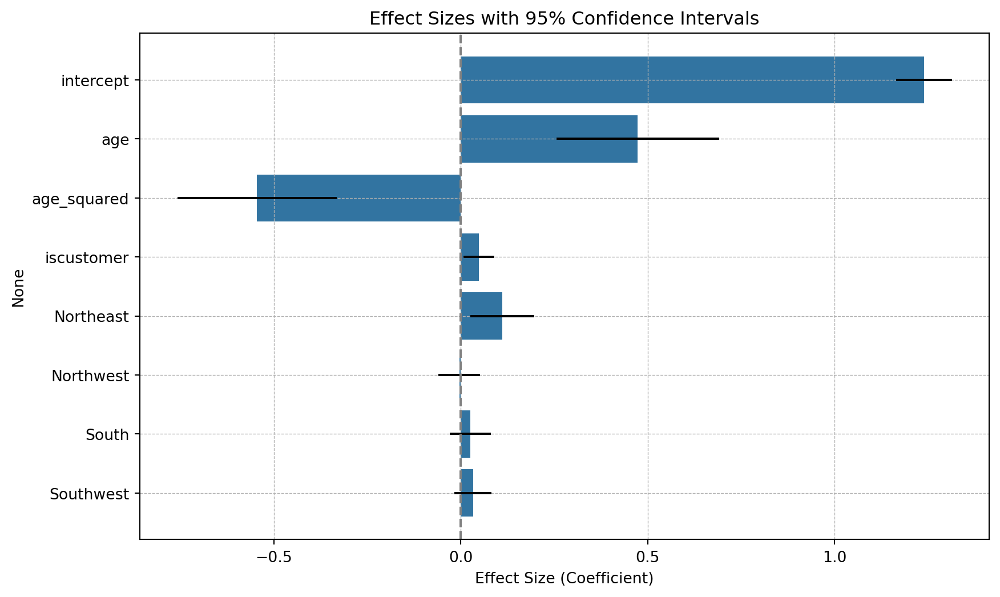
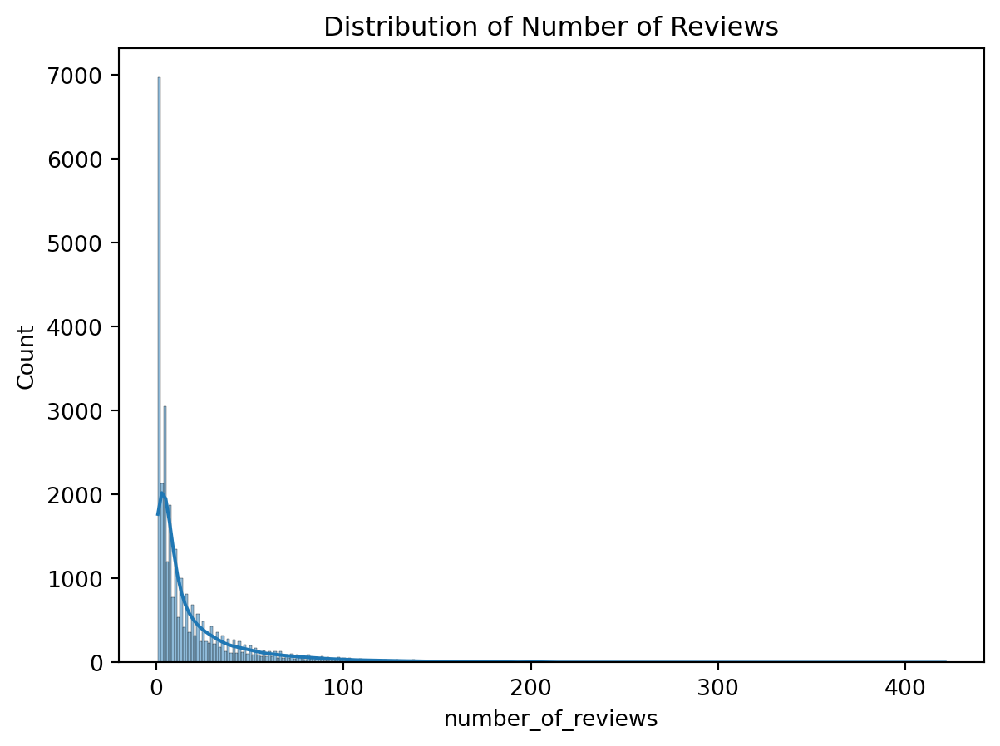
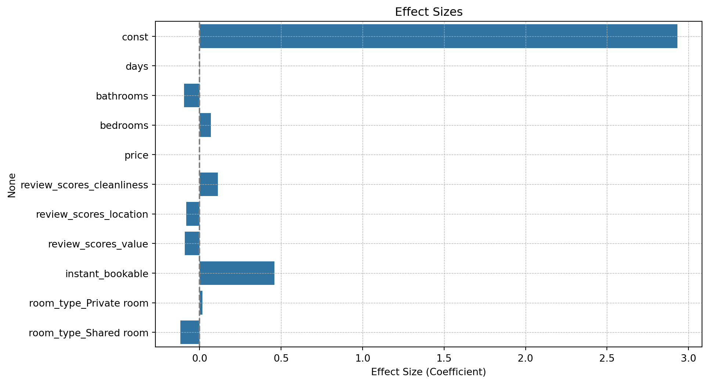

Blueprinty is a small firm that makes software for developing blueprints specifically for submitting patent applications to the US patent office. Their marketing team would like to make the claim that patent applicants using Blueprinty’s software are more successful in getting their patent applications approved. Ideal data to study such an effect might include the success rate of patent applications before using Blueprinty’s software and after using it. unfortunately, such data is not available.
However, Blueprinty has collected data on 1,500 mature (non-startup) engineering firms. The data include each firm’s number of patents awarded over the last 5 years, regional location, age since incorporation, and whether or not the firm uses Blueprinty’s software. The marketing team would like to use this data to make the claim that firms using Blueprinty’s software are more successful in getting their patent applications approved.
Data
We’ll start this investigation by loading the data and getting our various tools ready.
Code
# Importsimport pandas as pdimport numpy as npimport matplotlib.pyplot as pltimport seaborn as snsimport mathfrom scipy.optimize import minimizefrom scipy.special import gammalnfrom numpy.linalg import invfrom sklearn.preprocessing import StandardScalerimport statsmodels.api as smimport warningswarnings.filterwarnings('ignore')# Read in datadf = pd.read_csv('blueprinty.csv')print(df.head())
One of the first items to check is the general distribution of patents held within the firm data.
Code
# Group the data by customer statusgrouped = df.groupby('iscustomer')# Plot histograms and add the mean bar as a vertical linegrouped['patents'].plot(kind='hist', alpha=0.5, legend=True)plt.xlabel('Number of Patents')plt.ylabel('Frequency')plt.title('Histogram of Number of Patents by Customer Status')plt.show()# Calculate meansmeans = grouped['patents'].mean()print(means)
At a glance, it does appear that those firms who are also customers of Blueprinty have a higher average number of patents. From the above we see that non-customers hold roughly 3.6 patents whereas customers hold 4.1 patents on average.
Blueprinty customers are not selected at random. It may be important to account for systematic differences in the age and regional location of customers vs non-customers.
Let’s plot the distribution of ages and location to see if anything stands out.
Code
# Create a new column for age bracketdf['agebracket'] = pd.cut(df['age'], bins=range(0, 51, 10), right=False)# Show the counts by customer statussns.countplot(x='agebracket', hue='iscustomer', data=df)plt.xlabel('Age Bracket')plt.ylabel('Frequency')plt.title('Count of Customers by Age Bracket')plt.show()# Print the mean customer status by age bracketprint(df.groupby('agebracket')['iscustomer'].mean())
# Show the count of each region by customer statussns.countplot(x='region', hue='iscustomer', data=df)plt.xlabel('Region')plt.ylabel('Frequency')plt.title('Count of Customers by Region')plt.show()# print the mean customer status by regionprint(df.groupby('region')['iscustomer'].mean())

region
Midwest 0.075893
Northeast 0.188020
Northwest 0.085561
South 0.104712
Southwest 0.104377
Name: iscustomer, dtype: float64
There is definitely a skew in the data. Many firms are within the age range of 10 - 30 years. The region field also suggests that the firms that are also customers are heavily segmented in the Northeast region.
Estimation of Simple Poisson Model
Since our outcome variable of interest can only be small integer values per a set unit of time, we can use a Poisson density to model the number of patents awarded to each engineering firm over the last 5 years. We start by estimating a simple Poisson model via Maximum Likelihood.
is the log-likelihood function for a set of 𝑛 observations assumed to be independently and identically distributed according to a Poisson distribution with parameter λ.
In Python that math would take the form of the following function:
Code
def poisson_loglikelihood(lambda_, Y):""" Calculate the log-likelihood for a Poisson distribution given a parameter lambda and observed data Y. """if lambda_ <=0:return-np.inf # Log-likelihood is undefined for non-positive lambda values# Calculate the log-likelihoodtry: log_likelihood =-len(Y) * lambda_ + np.sum(Y * np.log(lambda_)) - np.sum([np.log(math.factorial(y)) for y in Y])exceptOverflowError: # Handling OverflowError that can occur with large factorials log_likelihood =float('-inf')return log_likelihood
Now we can use that function to plot the log-likelihood against alues of lambda. The maximum likelihood estimator is shown at the peak of the curve. We can see that it takes the value of approximately 3.68 which you may remember is somewhat closer to the average number of patents of non-customers.
Code
# Extract the 'patents' column as the observed data YY = df['patents'].values# Define a range of lambda valueslambda_values = np.linspace(0.1, Y.max() +2, 400)# Calculate the log-likelihood for each lambda valuelog_likelihoods = [poisson_loglikelihood(lambda_, Y) for lambda_ in lambda_values]# Calculate Y_bar, the sample mean of the observed data YY_bar = np.mean(Y)# Plottingplt.figure(figsize=(10, 5))plt.plot(lambda_values, log_likelihoods, label='Log-Likelihood')plt.axvline(x=Y_bar, color='red', linestyle='--', label=f'Y_bar at {Y_bar:.2f}', linewidth=2)plt.title('Log-Likelihood of Poisson Distribution for Various Lambda Values')plt.xlabel('Lambda (Rate Parameter)')plt.ylabel('Log-Likelihood')plt.grid(True)plt.legend()plt.show()

Mathematical Derivation
For a set of observations \(( Y = y_1, y_2, \ldots, y_n )\) that are independently and identically distributed according to a Poisson distribution, the log-likelihood function \(\lambda\) is given by:
This results in \(\lambda\) being equal to \(\bar{Y}\), which confirms that the mean of the Poisson distribution \(\lambda\) is also the rate parameter that maximizes the likelihood of observing the given data (i.e. the top of the curve on our plot).
We can also find this peak value by inputting this function into Python’s minimize function. Keep in mind that we are trying to maximize the function so instead we’ll pass the negative log-likelihood.
Code
# Define the negative log-likelihood functiondef neg_poisson_loglikelihood(lambda_, Y):""" Calculate the negative log-likelihood for a Poisson distribution given a parameter lambda and observed data Y. """if lambda_[0] <=0:return np.inf # Return infinity if lambda is not positivereturn-np.sum(Y * np.log(lambda_[0]) - lambda_[0] - gammaln(Y +1))# Extract the 'patents' column as the observed data YY = df['patents'].values# Initial guess for lambdainitial_lambda = np.array([4.5]) # Using 'minimize' from scipy.optimize to find the MLE for lambdaresult = minimize(neg_poisson_loglikelihood, x0=initial_lambda, args=(Y,), bounds=[(0.001, None)])# The optimal lambda foundlambda_mle = result.x[0]print("The MLE for lambda is:", lambda_mle)
The MLE for lambda is: 3.68466651967392
In solving using this alternative approach we again see a MLE of 3.68.
Estimation of Poisson Regression Model
Next, we extend our simple Poisson model to a Poisson Regression Model such that \(Y_i = \text{Poisson}(\lambda_i)\) where \(\lambda_i = \exp(X_i'\beta)\). The interpretation is that the success rate of patent awards is not constant across all firms (\(\lambda\)) but rather is a function of firm characteristics \(X_i\). Specifically, we will use the covariates age, age squared, region, and whether the firm is a customer of Blueprinty.
This requires a slight modification to the previous function where the negative log-likelihood was calculated. Below the function is amended to take additional arguments in the form of beta values. These represent the various characteristics of a firm relative to their number of patents.
Code
def neg_poisson_regression_loglikelihood(beta, Y, X):"""Calculate the negative log-likelihood for the Poisson regression model.""" linear_pred = np.dot(X, beta) lambda_ = np.exp(linear_pred) log_likelihood = np.sum(-lambda_ + Y * np.log(lambda_) - np.log(np.array([math.factorial(y) for y in Y])))return-log_likelihood # Return the negative log-likelihood for minimization
Processing of the data to create the regression includes a few steps. First, a column of ones is added to represent the intercept. Second, the square of ages is added as a new column. Third, categorical variables (region) are one-hot encoded to give them numerical values. Finally, these are joined together to create the new dataframe ‘X’ and all values are converted to integers for ease of calculation. Once done the dataframes will be passed through to minimization function.
Code
df['age_squared'] = df['age'] **2X = pd.concat([pd.DataFrame({'intercept': np.ones(len(df))}), df[['age', 'age_squared', 'iscustomer']], pd.get_dummies(df['region'], drop_first=True)], axis=1)Y = df['patents']# Cast Y and Y as intY = Y.astype(int)X = X.astype(int)column_names = X.columns
The output shows the feature name, the coefficient for each feature, and its standard error. You may notice that some of the standard errors are significantly larger than the coefficients.
Code
scaler = StandardScaler()# Check if X is a DataFrame and if it has more than one columnifisinstance(X, pd.DataFrame) and X.shape[1] >1:# Scale only the non-intercept columns if X is a DataFrame X.iloc[:, 1:] = scaler.fit_transform(X.iloc[:, 1:])else:# If X is already a numpy array or has only one column, handle accordinglyprint("Check the structure of X; it might not be a DataFrame or only contains one column.")# Initial guess for the parameters (beta)initial_beta = np.zeros(X.shape[1])# Use 'minimize' to find the MLE of betaresult = minimize( neg_poisson_regression_loglikelihood, x0=initial_beta, args=(Y, X), method='L-BFGS-B', options={'disp': True, 'maxcor': 20, 'ftol': 1e-9, 'gtol': 1e-9})# Check if the optimization was successfulif result.success: estimated_beta = result.xprint("Optimization successful.")else:print("Optimization failed.")print(result.message)if'hess_inv'in result:# Convert the hess_inv to a numpy array if it isn't already hess_inv_matrix = np.array(result.hess_inv.todense()) ifnotisinstance(result.hess_inv, np.ndarray) else result.hess_inv# Compute standard errors std_errors = np.sqrt(np.diag(hess_inv_matrix))# Create a DataFrame to display results nicelyresults_df = pd.DataFrame({'Variable': column_names,'Coefficient': estimated_beta,'Standard Error': std_errors,}) print(results_df)
Let’s check out results again using Python functions that already exist. To better visualize the potential effective sizes given the data, we’ll plot the coefficients and their confidence intervals.
Code
X = np.asarray(X, dtype=np.int64)Y = np.asarray(Y, dtype=np.int64)# Fit the GLM modelpoisson_model = sm.GLM(Y, X, family=sm.families.Poisson())result = poisson_model.fit()
Code
# Extract coefficients and standard errorscoefficients = result.paramsstandard_errors = result.bse # Standard errors of the coefficients# Get p-valuesp_values = np.round(result.pvalues, 2)# Create a DataFrame to display results nicelyresults_df_2 = pd.DataFrame({'Variable': column_names,'Coefficient': coefficients,'Standard Error': standard_errors,'P-Value': p_values}) # Compute the confidence intervalsconf_int = result.conf_int()conf_int_df = pd.DataFrame(conf_int, columns=['Lower CI', 'Upper CI'], index=column_names)# Merge with the coefficients dataresults_viz_df = pd.concat([results_df_2.set_index('Variable'), conf_int_df], axis=1)# Plottingplt.figure(figsize=(10, 6))sns.barplot(x='Coefficient', y=results_viz_df.index, data=results_viz_df, capsize=.2)for i, (lower, upper) inenumerate(zip(results_viz_df['Lower CI'], results_viz_df['Upper CI'])): plt.plot([lower, upper], [i, i], color='black')plt.title('Effect Sizes with 95% Confidence Intervals')plt.xlabel('Effect Size (Coefficient)')plt.grid(True, which='both', linestyle='--', linewidth=0.5)plt.axvline(x=0, color='grey', linestyle='--')plt.show()

Code
print("Model Summary:\n")print("\nCoefficient Estimates and Statistics:")print(results_df_2.to_string(index=False))
Model Summary:
Coefficient Estimates and Statistics:
Variable Coefficient Standard Error P-Value
intercept 1.239070 0.036474 0.00
age 0.473599 0.109353 0.00
age_squared -0.544929 0.107140 0.00
iscustomer 0.049033 0.019352 0.01
Northeast 0.111584 0.041997 0.01
Northwest -0.003576 0.026911 0.89
South 0.025941 0.026343 0.32
Southwest 0.032560 0.023606 0.17
To determine whether or not being a customer is linked to higher numbers of patents we need to closely examine the final outputs. At first our exploratory data analysis showed there was a noticeable difference in mean number of patents between non-customers and customers.
The potential effect size as given by the data may not be as large. Our final model suggests a coefficient of 0.049 if ‘iscustomer’ is true. If we broaden our view of the data we see that the 95% confidence interval is a range of positive values and this makes sense when the standard error is 0.019.
From this we can say that the marketing team is right, those using Blueprinty’s software are more successful in getting their patent applications approved. However, the level of success is potentially so small that one should consider whether the software’s use is truely a net benefit. The value of potential patents and cost of software implementation may make this a no-go for some potential users.
AirBnB Case Study
Introduction
AirBnB is a popular platform for booking short-term rentals. In March 2017, students Annika Awad, Evan Lebo, and Anna Linden scraped of 40,000 Airbnb listings from New York City. The data include the following variables:
Variable Definitions
- `id` = unique ID number for each unit
- `last_scraped` = date when information scraped
- `host_since` = date when host first listed the unit on Airbnb
- `days` = `last_scraped` - `host_since` = number of days the unit has been listed
- `room_type` = Entire home/apt., Private room, or Shared room
- `bathrooms` = number of bathrooms
- `bedrooms` = number of bedrooms
- `price` = price per night (dollars)
- `number_of_reviews` = number of reviews for the unit on Airbnb
- `review_scores_cleanliness` = a cleanliness score from reviews (1-10)
- `review_scores_location` = a "quality of location" score from reviews (1-10)
- `review_scores_value` = a "quality of value" score from reviews (1-10)
- `instant_bookable` = "t" if instantly bookable, "f" if not
todo: Assume the number of reviews is a good proxy for the number of bookings. Perform some exploratory data analysis to get a feel for the data, handle or drop observations with missing values on relevant variables, build one or more models (e.g., a poisson regression model for the number of bookings as proxied by the number of reviews), and interpret model coefficients to describe variation in the number of reviews as a function of the variables provided.
Here we will assume the number of reviews is a good proxy for the number of bookings. We’ll explore the given data and see what effects the available features have on the number of reviews.
To start we’ll load the data and perform some basic exploratory analysis.
Code
# Read in dataairbnb_data = pd.read_csv('airbnb.csv')print(airbnb_data.shape)print(airbnb_data.head())
(40628, 14)
Unnamed: 0 id days last_scraped host_since room_type \
0 1 2515 3130 4/2/2017 9/6/2008 Private room
1 2 2595 3127 4/2/2017 9/9/2008 Entire home/apt
2 3 3647 3050 4/2/2017 11/25/2008 Private room
3 4 3831 3038 4/2/2017 12/7/2008 Entire home/apt
4 5 4611 3012 4/2/2017 1/2/2009 Private room
bathrooms bedrooms price number_of_reviews review_scores_cleanliness \
0 1.0 1.0 59 150 9.0
1 1.0 0.0 230 20 9.0
2 1.0 1.0 150 0 NaN
3 1.0 1.0 89 116 9.0
4 NaN 1.0 39 93 9.0
review_scores_location review_scores_value instant_bookable
0 9.0 9.0 f
1 10.0 9.0 f
2 NaN NaN f
3 9.0 9.0 f
4 8.0 9.0 t
Ideally all of the data is a workable data type. Categorical variables should be one-hot encoded and any missing values should be removed.
# Distribution of number of reviewssns.histplot(airbnb_data['number_of_reviews'], kde=True)plt.title('Distribution of Number of Reviews')plt.show()print(airbnb_data['number_of_reviews'].mean())

21.168115461181156
Now that the data has been cleaned and we have a general sense of the distribution we will attempt to model it using a Poisson Regression. This requires a few steps. First, the features and dependent variable should be split. Second, a constant is needed to service as the intercept. Third, we assure that all data is a common data type. Finally, we fit the model using built-in Python functions to replicate our Poisson regression.
Code
# Prepare the data for modelingX = airbnb_data[['days', 'room_type', 'bathrooms', 'bedrooms', 'price', 'review_scores_cleanliness', 'review_scores_location', 'review_scores_value', 'instant_bookable']]X = pd.get_dummies(X, columns=['room_type'], drop_first=True)y = airbnb_data['number_of_reviews']# Adding constant for statsmodelsX = sm.add_constant(X)X = X.astype(int)y = y.astype(int)# Fit the Poisson regression modelpoisson_model = sm.GLM(y, X, family=sm.families.Poisson())result = poisson_model.fit()# Extract coefficients and standard errorscoefficients = result.paramsstandard_errors = result.bse # Standard errors of the coefficients# Get p-valuesp_values = np.round(result.pvalues, 5)# Create a DataFrame to display results nicelyresults_df_3 = pd.DataFrame({'Variable': X.columns,'Coefficient': coefficients,'Standard Error': standard_errors,'P-Value': p_values}) # Plottingplt.figure(figsize=(10, 6))sns.barplot(x='Coefficient', y=results_df_3.index, data=results_df_3, capsize=.2)plt.title('Effect Sizes')plt.xlabel('Effect Size (Coefficient)')plt.grid(True, which='both', linestyle='--', linewidth=0.5)plt.axvline(x=0, color='grey', linestyle='--')plt.show()

Code
# Compute the confidence intervalsconf_int = result.conf_int()conf_int.columns = ['Lower CI', 'Upper CI']results_df_3 = pd.concat([results_df_3, conf_int], axis=1)print("Model Summary:\n")print("\nCoefficient Estimates and Statistics:")print(results_df_3.to_string(index=False))
The plot above shows the general effect size for each of the features. By value the largest effects on the number of reviews are seen in the constant (intercept) with some additional effect by the ‘instant_bookable’ feature. The table shows each variable (feature), it’s associated coefficient, standard error, and p-values as well as the upper and lower 95% confidence intervals.
What we see here is statistically significant data, but with coefficients that are so narrowly bounded and close to zero that most of the features do not indicate an effect on the number of reviews. The coefficient of the intercept is very close to the log of the mean value of number of reviews. If the intercept value is close to the log of the mean of the dependent variable, this suggests that the model, without much contribution from other predictors, is essentially reverting to predicting the mean of the count data.
The approximate relationship can be expressed as \(\log(\lambda) \approx \beta_0\).
When other predictors do not significantly influence the model, the intercept alone should closely estimate the log of the mean of the dependent variable.